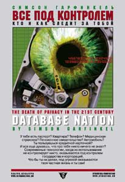

Симсон Гарфинкель • Все под контролем • Перевод: Владислав Мяснянкин • cybertime • 30.01.2004

У тебя есть паспорт? Квартира? Телефон? Медицинская страховка? Пенсионное свидетельство? Автомобиль? Ты пользуешься кредитной карточкой? И все еще думаешь, что про тебя никто ничего не знает? Современные технологии, когда их использование не контролирует никто, оказываются под контролем государства и корпораций. Что бы ты ни делал, под угрозой оказываются твоя частная жизнь и ты сам!
Пресса
Александр Чанцев. Оливки следят за тобой
Думаю, что для тех, кто читает фантастику, смотрит кино (недавно показанный «Враг государства» был как раз про это) и просматривает газеты, не секрет, что в современном мире скрыться сложно. Если у тебя есть кредитка, пенсионное свидетельство, ИНН, да и просто паспорт, а живешь ты в городе с вездесущими камерами слежения и т.д., то не стоит и мечтать о приватности – по-английски privacy. Выход – удалиться, по примеру Филиппа Дика, в сельскую местность, покупать все за наличность, а еще лучше перейти на натуральное хозяйство, чтобы меньше бывать в городах, обклеить свою хижину чем-нибудь против радаров спецслужб, а над ней натянуть камуфляжный холст – вы же, надеюсь, не забыли про спутники-шпионы?
Гарфинкель четко доказывает, что в современном мире спрятаться негде, потому что всю жизнь вы проводите в невидимых путах. И горе вам, если система однажды даст сбой – сюжеты тут разворачиваются воистину кафкианские. Из-за ошибки в кредитной истории человек лишается возможности не только открыть банковский счет, но и устроиться на нормальную работу. Вашу личность могут украсть – а вы даже знать не будете о том, что мошенники, собрав о вас всевозможные сведения, начнут вести дела от вашего имени. Даже ваше изображение могут использовать без вашего ведома в коммерческих целях – это называют «пиратство образа».
Читатель узнает о плюсах, минусах и моральных аспектах различных типов биометрической идентификации: тут и традиционная дактилоскопия, и анализ ДНК, и сканировании сетчатки глаза – вплоть до таких экзотических, как идентификация человека по его силуэту и манере печатать на компьютере. Ну и, конечно, о различных видах слежки, прослушки и контроля. И главное – о попытках людей отстаивать свою приватность.
Занимательных сведений в книге уйма: оказывается, задолго до взрыва Всемирного Торгового центра в Нью-Йорке предсказывали его вплоть до деталей; женщин нельзя с точностью идентифицировать по сетчатке глаза; Марк Твен ратовал за дактилоскопию, а ФБР собирало по всей стране телепатов для программы «прослушивания мозга»…
Автора не создает очередную «теорию заговора» ФБР, ЦРУ или Большого брата, а склонен винить в тотальной слежке за человеком Большой бизнес. Именно корпорации стремятся следить за всеми вашими покупками по кредитной карте, забрасывают вас спамом, рекламными предложениями – все во имя более четкой маркетинговой стратегии. А помогает им в этом быстрое развитие технологий – видеокамерой, спрятанной в оливке, или микрофоном-дротиком уже никого не удивишь.
Увы, большинство сюжетов о борьбе за privacy, являются сугубо американскими. Ведь такие штуки, как электронные письма от виртуала с целью выведать секреты вашей фирмы, «интеллектуальный агент», «извлечения Я» и прочие ужасы у нас еще не в ходу. Впрочем, Россия быстро осваивает новейшие методы нарушения приватности, так что не грех подготовиться ко всему этому заранее….
Киви Берд. Не роман, но предупреждение
В 1948 году английский писатель Эрик Артур Блэр, более известный миру как Джордж Оруэлл, опубликовал свой знаменитый роман-предупреждение «1984». Переставив последние цифры текущего года, Оруэлл перенес действие антиутопии в сравнительно недалекое будущее, где вся жизнь людей — общественная, личная, любая — оказалась под неусыпным и жестким контролем тоталитарного государства во главе с Большим Братом.
Еще полвека спустя, в середине 1990-х годов, американский компьютерщик и журналист Симсон Гарфинкель (www.simson.net) вдруг остро осознал, что мрачные пророчества Оруэлла начинают сбываться буквально на глазах, причем не где-то в тяготеющих к тирании странах третьего мира, а в свободных и демократических, казалось бы, Соединенных Штатах. Повсеместный компьютерный учет, присвоенные всем гражданам номера-идентификаторы, камеры наблюдения на улицах и в зданиях, отслеживаемые покупки по кредитным карточкам и т. д. — в совокупности эти признаки дивного нового мира инфотехнологий понемногу сводят на нет фундаментальное право человека на тайну личной жизни (или по-английски privacy — «приватность», что, вообще говоря, адекватным словом на русский не переводится и имеет гораздо более широкий смысл, типа «право на то, чтобы тебя оставили в покое»).
Будучи человеком весьма и весьма осведомленным в инфотехнологиях, автором и соавтором целого ряда нашумевших книг1, Гарфинкель явственно увидел — сохранись наметившиеся тенденции еще десяток-два лет, и от тайны личной жизни не останется ничего. Причем делает это даже не Большой Брат (государство), а сотни и тысячи «маленьких братьев» — корпораций, настойчиво и любыми доступными способами накапливающих всю возможную информацию о потенциальных клиентах и покупателях… И тогда Симсон Гарфинкель решает написать свой роман-предупреждение — о полной гибели приватности в обществе недалекого будущего, году, скажем, в 2048 (очевидная обратная инверсия оруэлловской схемы 1948-1984-2048).
Однако по мере работы над романом у автора накопился столь богатый фактический материал об очевидном исчезновении понятия «тайна частной жизни» уже сегодня, а не где-то там в смутном будущем, что художественно-литературное произведение само собой превратилось в документально-публицистическое. В 1999 году вышло первое издание книги Гарфинкеля под названием «Нация баз данных: гибель приватности в 21-м веке» («Database Nation: The Death Of Privacy In The 21st Century»).
Давая своей работе такое мрачное название, автор решил пойти по пути, проторенному в начале 1960-х годов знаменитой книгой биолога Рэйчел Карсон «Безмолвная весна». Рассказав о чудовищном загрязнении человеком окружающей среды и предупредив о гибельных для природы опасностях от массового применения пестицидов, книга Карсон фактически породила мощное экологическое движение на планете. Гарфинкель надеялся, что и его работа — впервые сводящая в цельную и, скажем прямо, жуткую картину огромное количество фактов о степени инфотехнологического вторжения в личную жизнь американцев, — станет сигналом к объединению мировой общественности в борьбе за сохранение своих неотъемлемых прав на приватность.
Сейчас уже ясно, что этого, увы, не произошло. Книга «Database Nation…», бесспорно, стала явлением в своем жанре, однако заметных сдвигов в общественном сознании не сделала. Причин тому много, но одна из главных — неблагоприятная политическая атмосфера, установившаяся вскоре после публикации. Начиная с 11 сентября 2001 года, как все знают, лейтмотивом всей американской (да и не только американской) жизни стали угрозы терроризма и безопасность, обеспечиваемая за счет ощутимого сужения гражданских прав. Ныне все более глубокое вторжение в частную жизнь граждан — контроль за перепиской, покупками, поездками, болезнями, интересами — возглавляет уже само государство, координирующее усилия корпораций, банков, страховых и здравоохранительных структур. В книге же Гарфинкеля государственная власть рассматривается как она из главных сил, способных с помощью четкого ограничивающего законодательства выстроить систему, более уважительно относящуюся к человеку и его праву «быть оставленным в покое».
Конечно, не автор виноват в том, что общество оказалось не готово с должным вниманием отнестись к его предупреждениям. И конечно же, актуальность собранных в работе материалов и рекомендаций ничуть не умаляется от того, что «Database Nation…» не стала «библией поколения». Не исключено, что ее значимость будет понята несколько позже. Ну а пока российские издательства «Ультра.Культура» и «У-Фактория» дают возможность отечественному читателю познакомиться с переводом книги. В России работа Гарфинкеля опубликована под названием «Все под контролем: кто и как следит за тобой». Дополнительные подробности о книге и текст некоторых глав можно найти на сайте «Ультра.Культуры» по адресу www.ultraculture.ru.
Опубликовано в журнале “Компьютерра” №14